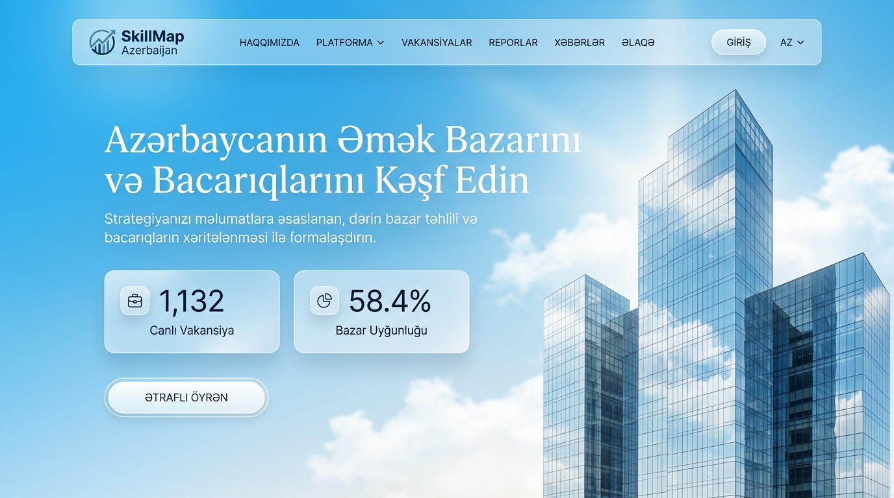
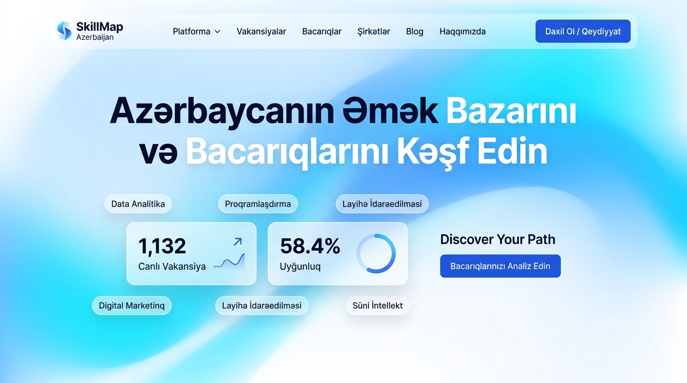
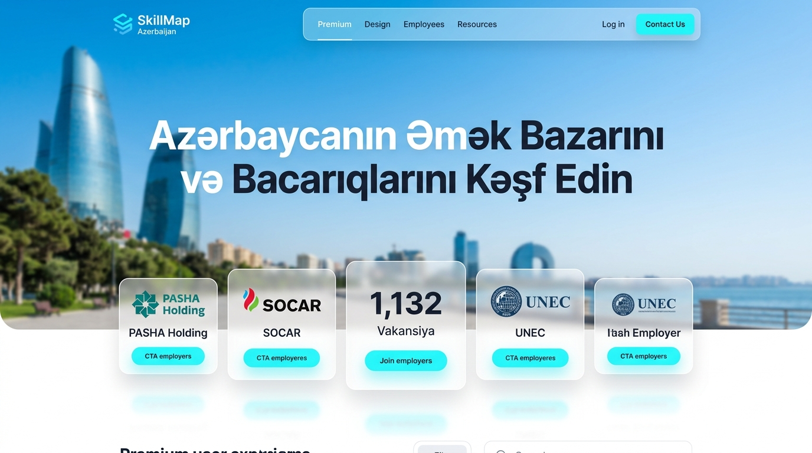
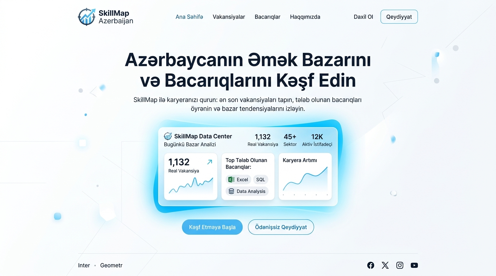

pasha-holding.az saytındakı kimi açıq səma mavisi, kristal şüşə fasad, gün işığı və canlı axıcı hərəkətli aboy tərzində hazırlanmış 4 yeni konsept:
Gözoxşayan açıq səma mavisi, günəşli Bakı şüşə fasadı və yavaş-yavaş axan canlı gün işığı/bulud hərəkəti. Ağ buzlu şüşə kartları və zərif tipoqrafiya.

Açıq səma mavisi, parıltılı firuzəyi və təmiz mirvari ağ rənglərdən ibarət canlı, axıcı maye gradient dalğalı arxa fon (ultra-müasir açıq SaaS).

Aydın günəşli Bakı panoraması fonunda havada asılı qalan kristal şüşə kartları (PASHA Holding, SOCAR, UNEC) və canlı 1,132 vakansiya sayğacı.

Ultra-təmiz parlaq ağ fon üzərində incə səma mavisi aura işığı, dəqiq və kəskin oxunaqlı tipoqrafiya (Linear və Stripe Light mode tərzində).
